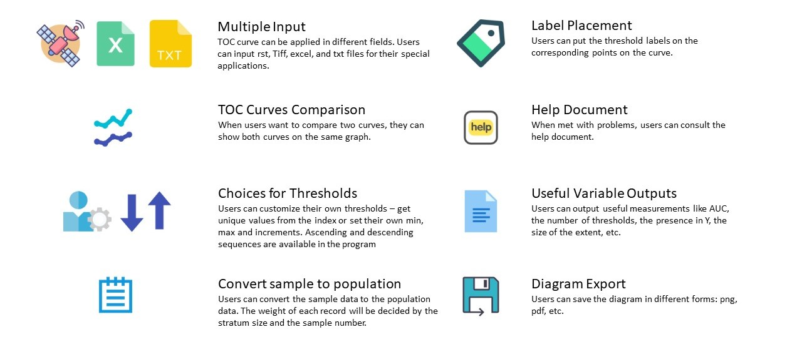

TOC Generator
Zhen Liu
TOC Generator is a computer program to make TOC curves. Users can generate TOC curves from various file formats and customize TOC curves for research.
How to Download and Run TOC Generator
Click the right top button "Download" to download the program. Click "TOC_generator.exe" to start the progam. The instruction slide is in the folder "instruction".
Papers describing the algorithms
Pontius, R. G., & Si, K. (2014) "The total operating characteristic to measure diagnostic ability for multiple thresholds". International Journal of Geographical Information Science, 28(3), 570–583.
Citation
If you make public a diagram that you worked out and/or checked with TOC Generator, you may cite the software as follows:
Zhen Liu (2020) "TOC Generator," software package, https://lazygis.github.io/projects/TOCGenerator
Last modified August 4, 2020